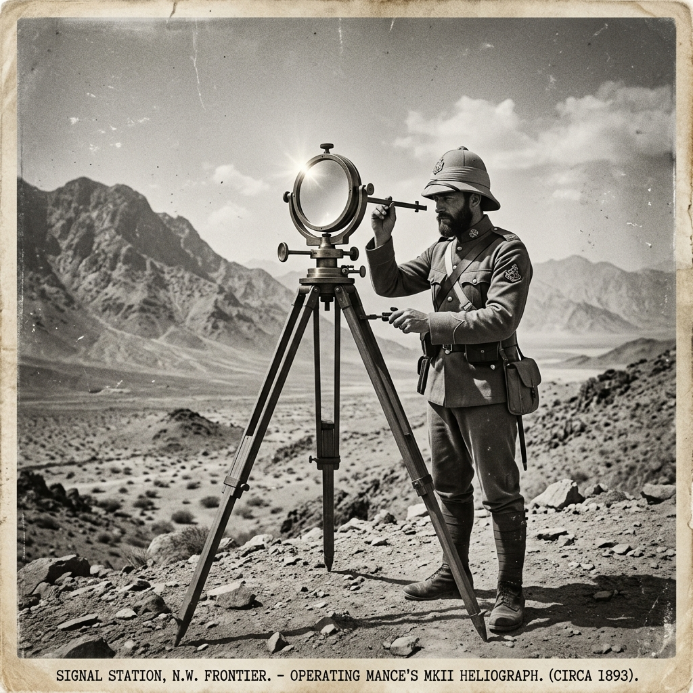

Orbital Heliography
Welcome. I am Ryu Izawa, and this is a documentation of our attempts at a pioneering, never-before-done activity: Orbital Heliography.
By precisely tracking the relative positions of the Sun and Earth-orbiting satellites to within one-thousandth of a second, we use specialized surface mirrors to reflect solar light directly to orbital receivers. Through this optical synchronization, we are opening a new channel for interstellar and orbital heliographic communication.
Δθ = \pm 0.001\text{s}

Heliography through Time
Heliography—signaling by flashing sunlight reflected from a mirror—has rich historical roots. Developed formally by Sir Henry Christopher Mance in 1869, the heliograph was widely adopted by military campaigns in the late 19th and early 20th centuries. Operating on Morse code, these systems allowed soldiers to communicate across vast desert vistas and mountain ranges, with flashing points visible up to 100 miles away.
Our project leaps from these terrestrial signaling networks into orbital altitudes. Rather than communicating across mountain ridges, we project precise solar flashes upwards into the path of LEO satellites, adapting this 19th-century solar technology for the space age.
Orbital Intercept Physics
Tracking celestial angles and satellite velocities.
Thousandths-of-a-Second Tracking
Satellites in Low Earth Orbit (LEO) travel at speeds exceeding 7.5 kilometers per second. To hit a satellite's optical receiver with a reflected beam of sunlight, we must compute orbital intercepts with sub-millisecond precision. Even a deviation of 0.001 seconds corresponds to a positional error of 7.5 meters—meaning the reflected beam will completely miss the target.
Atmospheric Refraction Correction
We calculate real-time refraction parameters based on local meteorological readings. By compensating for atmospheric density variations, we steer our high-precision mirror mounts to correct coordinate errors.
The Research Team
Collaborating scientists and optical engineers pioneering the orbital heliography program.
| Researcher Name | Role in Project | Focus & Specialization |
|---|---|---|
| Dr. Hari Seldon | Principal Orbit Dynamicist | Predictive modeling of satellite orbital windows using high-order spherical harmonics. |
| Dr. Gaal Dornick | Chief Optical Systems Architect | Design of reflective heliostat coatings and high-speed mirror shutter alignment arrays. |
| Coordinator Salvor Hardin | Field Synchronization Lead | Management of atmospheric telemetry and ground-to-orbit messaging transmission. |
| Engineer Hober Mallow | Solar Tracker Hardware Specialist | Development of sub-millisecond stepper motors and celestial solar-tracking sensors. |
Signal Attempts Log
A chronological timeline of mirror targeting missions and orbital reflection sync runs.
Helios-Target Alpha
Initial targeting window test targeting LEO reflector array. Tracking window: 12 seconds. Result: Target missed due to 0.004s step-motor tracking delay. Coordinate deviations mapped.
LEO Reflect-Sync
Refined step-motor calibration. Tracking window: 18 seconds. Result: Partial reflection feedback confirmed by orbital optical sensor. Calibration delta within 0.0015s.
Equatorial Meridian Test
Targeting satellite transit along the local meridian. Tracking window: 25 seconds. Result: Successful locking of mirror reflection beacon. Complete Morse packet sent.
Helios-Sync Beta
Next scheduled transit sync. Objective: Establish continuous reflection link for 40 seconds to verify high-bandwidth signal modulation. Calibration targets set.